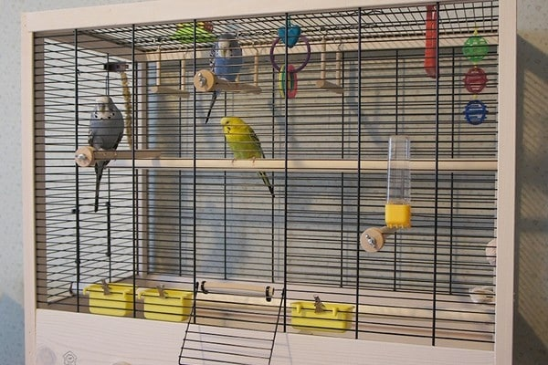
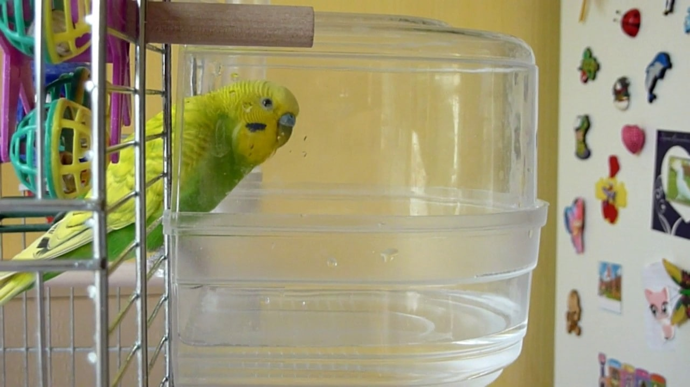
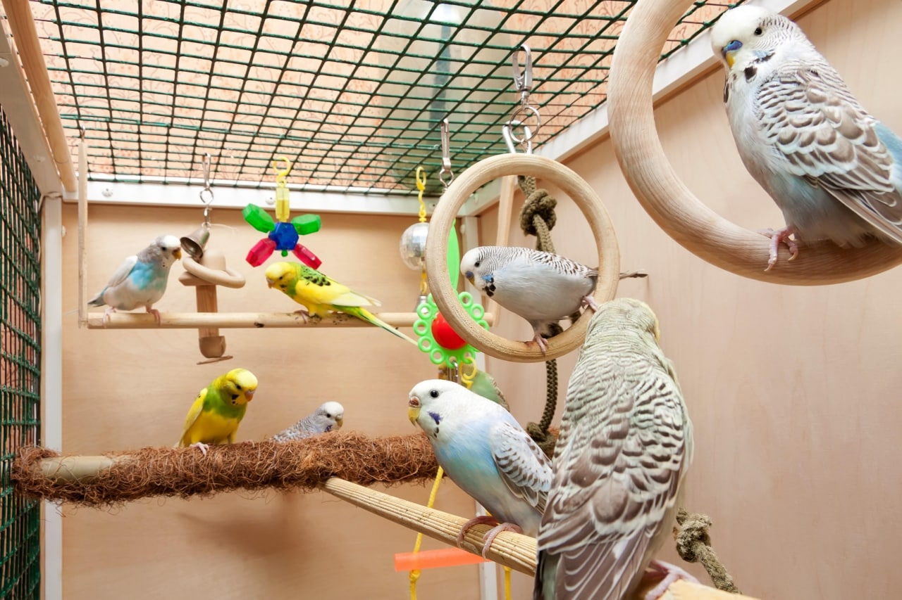
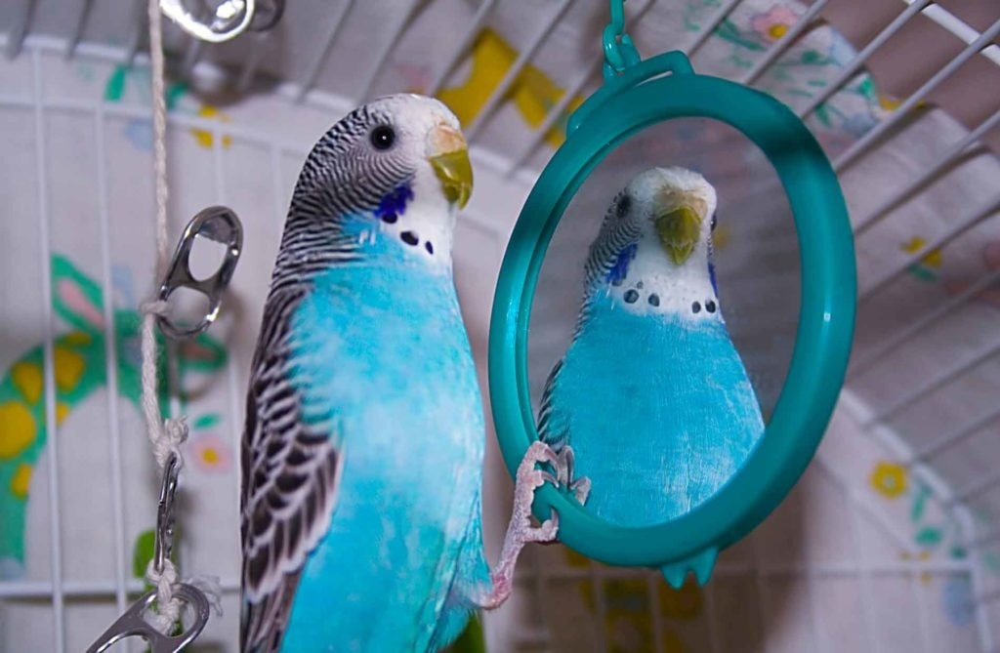

Купите большую клетку. Птицам необходимо пространство для игр и разминки крыльев. Если вы заботитесь об их благополучии, попробуйте подыскать такую модель клетки, в которой у птиц будет возможность перелетать с места на место. Клетка должна иметь размеры не менее 50 см (Г) х 60 см (В) х 80 см (Ш).

Купите большую клетку. Птицам необходимо пространство для игр и разминки крыльев. Если вы заботитесь об их благополучии, попробуйте подыскать такую модель клетки, в которой у птиц будет возможность перелетать с места на место. Клетка должна иметь размеры не менее 50 см (Г) х 60 см (В) х 80 см (Ш).
Разместите в клетке купалку. Волнистые попугайчики могут много мусорить, но сами они любят оставаться чистыми. Ради развлечения они даже могут пробовать нырять. Поищите в зоомагазине прочную миниатюрную купалку, которую можно подвешивать к стенке клетки. Она должна быть доступной для попугаев и легко наполняемой водой снаружи клетки.

Добавьте в клетку несколько жердочек различной толщины, формы и текстуры. Отлично использовать жердочки из натуральных веток, особенно в сравнении с жердочками из пластика или обработанной древесины. Они смотрятся гораздо лучше. Убедитесь в том, что жердочки надежно закреплены, чтобы избежать возможных травм.

Существует большое разнообразие игрушек. Обратите внимание на лестницы, колокольчики, шарики и так далее. Они послужат источником развлечений для вашего попугайчика.Взвесьте плюсы и минусы использования зеркала. Если поместить в клетку зеркало, это обеспечит попугаю целые часы развлечений. Попугаи любят смотреть на себя и разговаривать со своим отражением, однако имейте в виду, что так происходит не всегда и есть вероятность, что птица будет воспринимать свое отражение как соперника.
